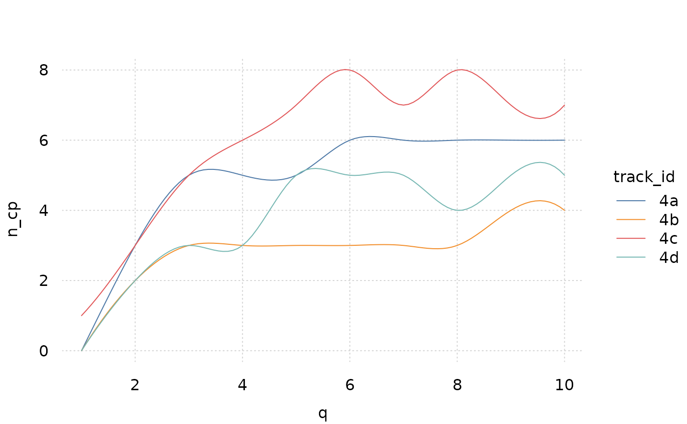

plot_n_cp_by_q.RdPlots number of change points given different values of q
plot_n_cp_by_q(data, id_col, ...)generated by calculate_n_cp_by_q
column name of the track id column
other arguments used in tinyplot
library(tinyplot)
data("cptfiguredata_tf")
data <- cptfiguredata_tf[startsWith(cptfiguredata_tf$track_id, '4'),]
calculate_n_cp_by_q <- function(tf, q=seq_len(10), alpha = 0.01) {
if(length(attr(tf, 'id'))!=1) stop('only implemented for 1 id col')
do.call(rbind, lapply(seq_len(10), function(q) {
cp <- change_point_test(
tf,
alpha = alpha,
q = q
)
df <- as.data.frame(rowsum(as.integer(cp$cp_id != 0), as.factor(cp[,attr(tf, 'id')])))
names(df) <- 'n_cp'
df$track_id <- rownames(df)
rownames(df) <- NULL
df$q <- q
df
}))
}
n_cp_by_q <- calculate_n_cp_by_q(data)
tinytheme("clean2")
plot_n_cp_by_q(data = n_cp_by_q, id_col = "track_id")
